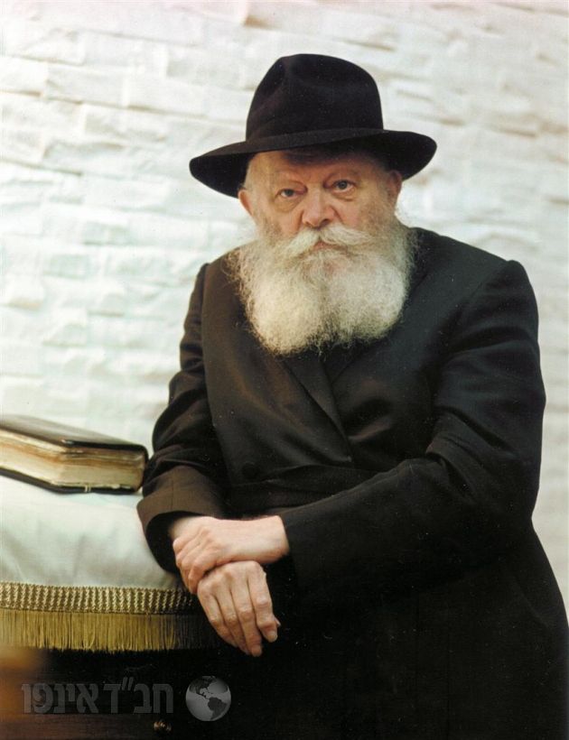

מוסדות יעקב וגיטל
Yakkov & Gittle Institutions
יעקב וגיטל - עושים טוב בלב ובנשמה
עמותת 'יעקב וגיטל' הוקמה מתוך שליחות עמוקה להפיץ אור, תקווה וסיוע בכל מקום בו אנו פוגשים אדם הזקוק ליד מושטת בצפת עיר הקודש ת"ו. העשייה שלנו היא פסיפס חי ומרגש של אהבת ישראל טהורה, שמתפרסת על פני מגוון רחב של תחומים.
אנו גאים לעמוד לצד חיילי צה"ל הגיבורים, מעניקים להם חיזוק וחיבוק חם שמזכיר להם כמה העם מאחוריהם. הלב שלנו פועם עבור משפחות נזקקות, ואנו פועלים יום-יום כדי להבטיח ששום שולחן לא יישאר ריק.
השמחה היא חלק בלתי נפרד מאיתנו; אנו מרימים תהלוכות ל"ג בעומר ססגוניות שמדליקות את האש היהודית, ומקיימים פעילות ערכית וחווייתית עם ילדים. בכל פעולה שלנו, אנחנו חיים חסד, כי אנחנו מאמינים שמעשה טוב אחד יכול לשנות עולם שלם.
